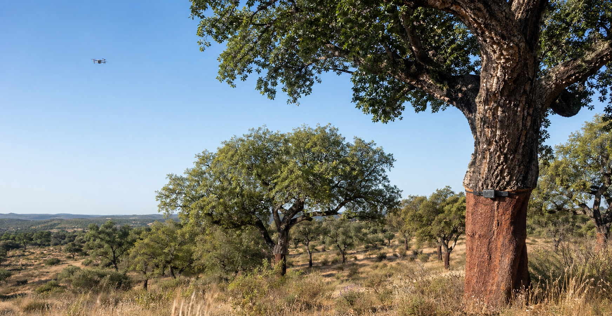
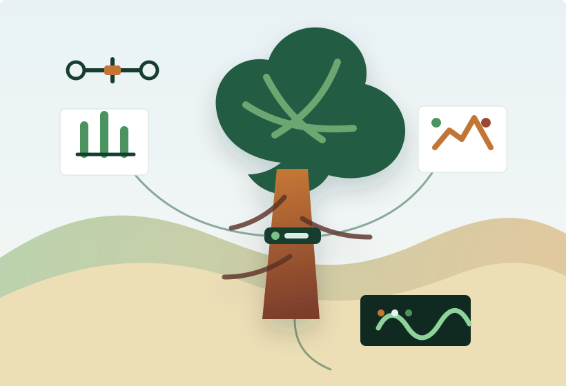
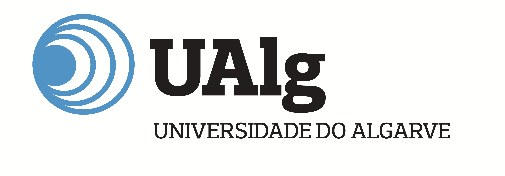

Ana Cristina Coelho
Investigadora Responsável

Universidade do Algarve · 2026-2029
Adaptações dos sobreiros face às alterações climáticas e como as mesmas promovem a sustentabilidade do ecossistema.
Um projeto multidisciplinar que combina monitorização remota, sensores ambientais, genómica, proteómica e inteligência artificial para identificar árvores resilientes no Algarve.
O desafio
As florestas de sobreiro são ecossistemas essenciais para a biodiversidade, a proteção contra a desertificação e a economia da cortiça. No sul de Portugal, a redução da precipitação, o aumento das temperaturas, a degradação do solo e agentes patogénicos como Phytophthora cinnamomi estão a acelerar o declínio das árvores.
O OAKHIMEDES cria uma leitura multidimensional do estado fisiológico dos sobreiros, relacionando copa, tronco, solo, clima, perfis moleculares e modelos de previsão para apoiar decisões de gestão florestal e reflorestação.
Plano científico
O projeto acompanha 25 sobreiros na Serra do Caldeirão e 25 na Serra de Monchique, comparando condições xéricas e mesófilas ao longo de dois anos de monitorização.

Equipa de investigação
Investigadora Responsável
Atividades
Coordenação científica, articulação institucional, seleção de equipa, bolsas e acompanhamento da execução.
Imagens aéreas, índices de vegetação, crescimento radial e nutrição foliar para avaliar vigor vegetativo.
Caracterização climática, topográfica, edáfica e biótica, incluindo a presença de P. cinnamomi.
FT-IR, proteómica quantitativa e WGS para identificar biomarcadores e variabilidade genética adaptativa.
PCA, t-SNE, PLS, SVM e aprendizagem automática para encontrar padrões de resiliência e risco de declínio.
Website, documentos técnicos, mapas, vídeos, workshops, conferências, publicações científicas e patente.
Resultados esperados
Mapas, séries temporais e índices fisiológicos para descrever o estado das árvores em campo.
Conjuntos de dados de FT-IR, proteómica e genómica para caracterizar mecanismos de adaptação.
Ferramentas de apoio à decisão para identificar fatores de risco e árvores candidatas a árvores-mãe.
Protocolos, publicações Q1, workshops, demonstrações de campo e materiais para decisores e produtores.
Cronograma
Início do projeto, equipa, gestão colaborativa e apresentação às entidades locais.
Instalação de equipamentos e seleção de sobreiros nas serras do Caldeirão e de Monchique.
Monitorização ambiental, imagens drone, caracterização do solo e recolhas laboratoriais.
Análise multivariada, aprendizagem automática e relação entre microambiente, fisiologia e perfis ómicos.
Publicações, congresso nacional no Algarve, transferência de conhecimento e encerramento científico.
Entidade beneficiária

Projeto coordenado pela Investigadora Principal Ana Cristina Coelho, com equipa multidisciplinar nas áreas de bioquímica, biologia vegetal, ciências do ambiente, sensores, telecomunicações, inteligência artificial e design.